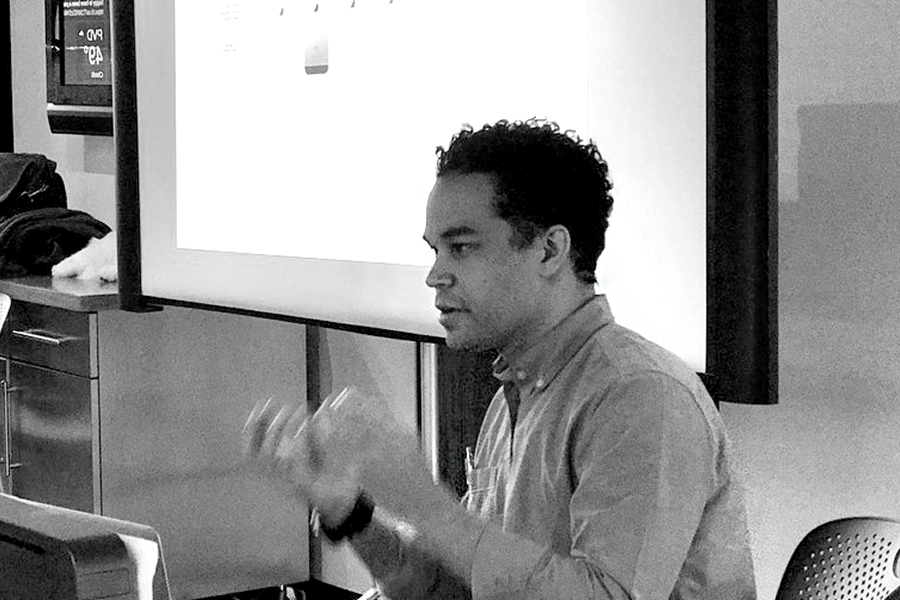
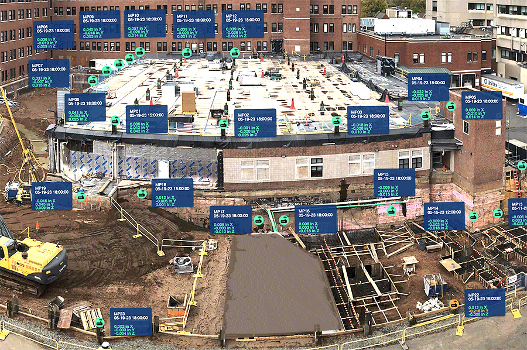
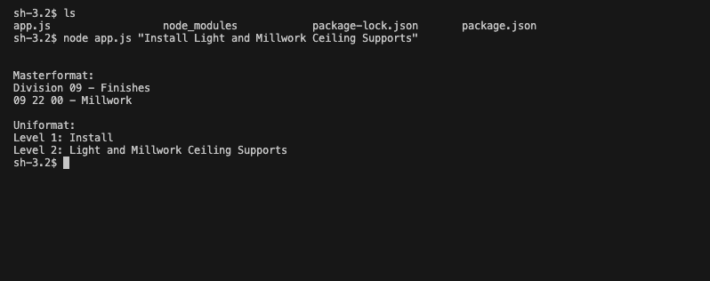
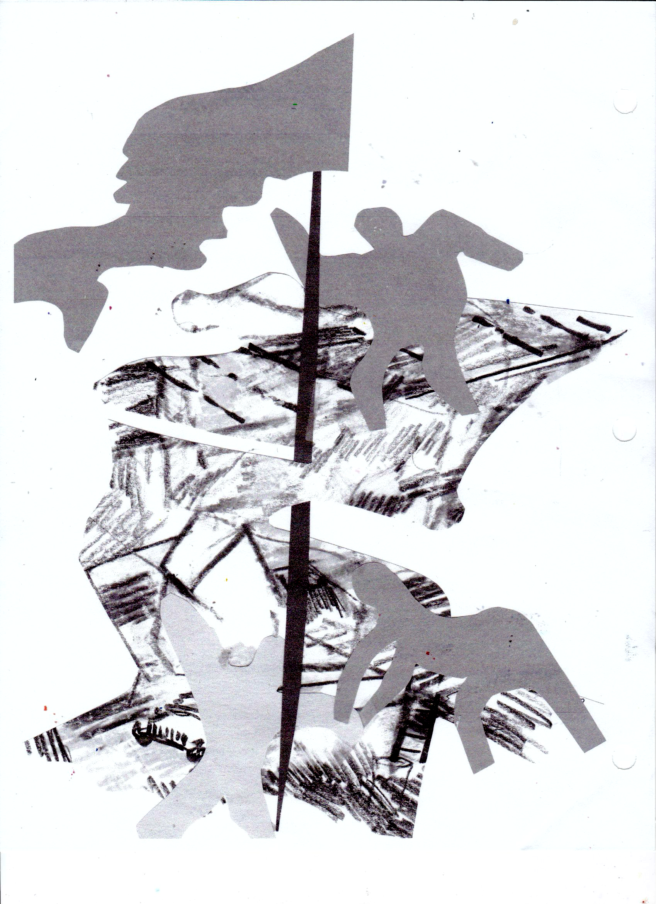
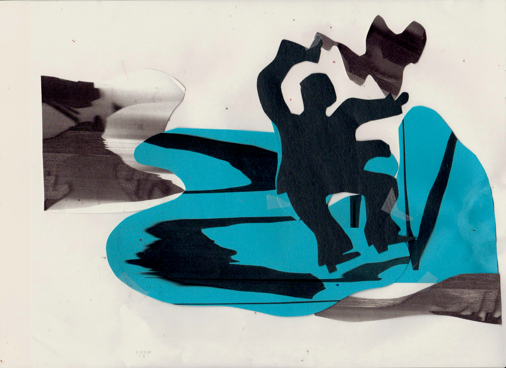
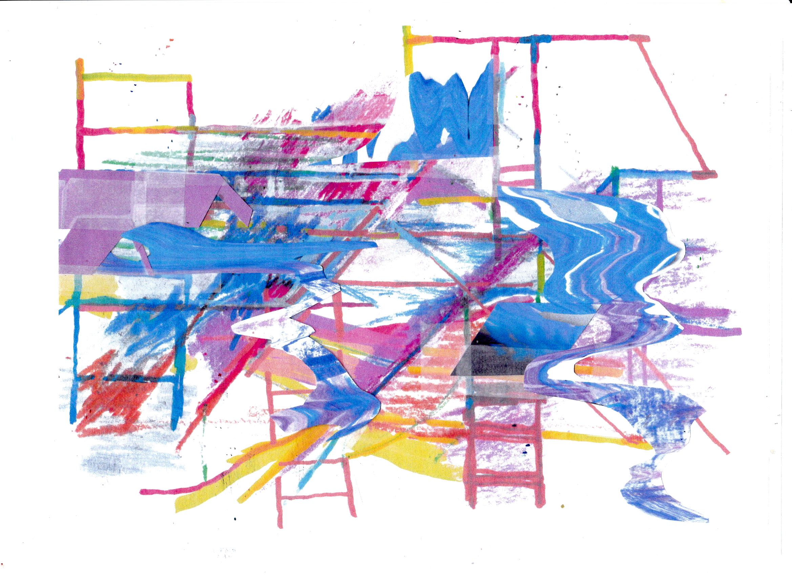
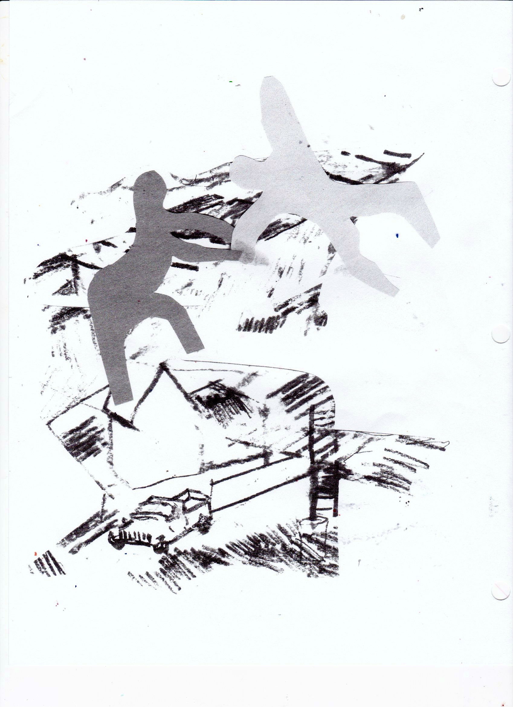

Artist by training. Engineer by practice.

BFA, ART & TECHNOLOGY — SAIC
I came to software engineering through networked objects, physical
computing, and interactive systems — design thinking and technical
execution on equal footing from the start.
01 Index of work
- Geo-Instruments 2024—
- Task Classification 2023
- Interlinked 2023
- Suffolk Construction 2021—23
- CCR Pond Closures 2021
- Pore Pressure Monitoring 2021
- United Way 2017
- ColdEeze 2015
Hover the index — previews follow the cursor.

02 Field evidence

For the past decade I’ve worked the full intersection — agency-era UI/UX and brand work for national clients, through to production frontend engineering on platforms serving hundreds of active construction projects. A designer’s eye for component architecture; an engineer’s rigor for design systems.
03 The sketchbook never closed




